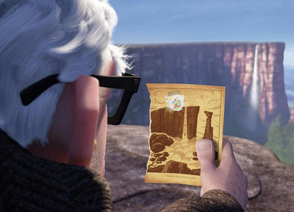

<div style="background-color: red; width: 600px; height: 500px; margin-top: 30px">
    
    <h1>
    	Фильм Гая Ричи
    </h1>
</div>

<div style="background-color: blue; width: 600px; height: 500px; margin-top: 30px">
    
    <h1>
    	Этот фильм основан на реальных событиях
    </h1>
</div>

<div style="background-color: green; width: 600px; height: 500px; margin-top: 30px; background-image: url(images.png); border-width: 5px; padding-left: : ">
    
    <h1>
    	"Когда проблемы тянут назад, смотри в вверх!"
    </h1>
</div>
